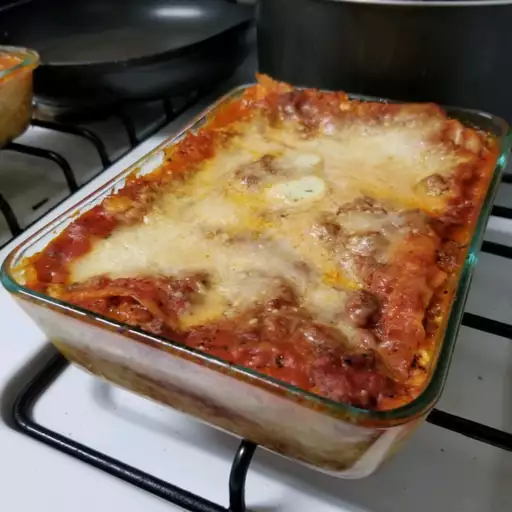

Easy Lasagna

Description
An easy lasagna recipe that saves me lots of time.
This dish satisfies everyone in the family. Try it tonight!
Ingredients
1 (32 ounce) jar spaghetti sauce
3 cups shredded mozzarella cheese, divided
1/2 cup grated parmesan cheese
2 teaspoons dried parsley
ground black pepper to taste
Steps
preheat the oven to 350 degrees F (175 Degrees C)
Heat a large skillet over medium-high heat. Cook and stir ground
beef in the hot skillet until browned and crumbly, 8 to 10 minutes.
Drain and discard grease. Stir in spaghetti sauce and simmer for
5 minutes.
Combine cottage cheese, 2 cups of mozzarella cheese, eggs, 1/2 of
the grated Parmesan cheese, dried parsley, salt, and pepper in a
large bowl.
Spread 3/4 cup of sauce in a 9x13-inch baking dish. Cover with 3
uncooked lasagna noodles, 1 3/4 cups of cheese mixture, and 1/4
cup sauce; repeat layers once more. Top with remaining 3 noodles,
sauce, mozzarella, and Parmesan cheese. Pour 1/2 cup water along
the edges of the dish. Cover tightly with aluminum foil.
Bake in the preheated oven for 45 minutes. Uncover and bake for
an additional 10 minutes. Let stand 10 minutes before serving.